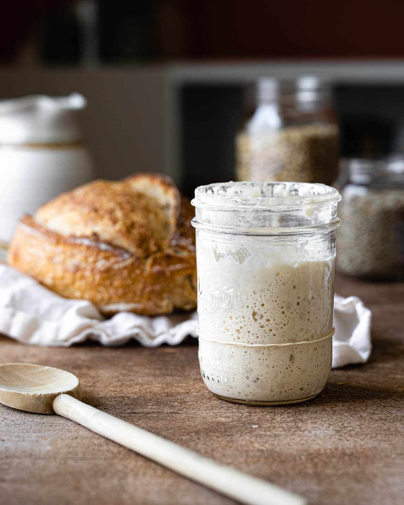

Nourrir le levain naturel

Description :
Ma recette pour nourrir du levain naturel, agrémentée d'astuces que j'ai collectées au fur et à mesure de ma pratique.
Ingrédients
- du levain,
- de la farine,
- de l'eau à température ambiante.
Étapes
-
Sortir le levain du réfrigérateur s'il si trouve (il peut être conservé bien plus longtemps sans avoir à le nourrir en étant au frais) ;
-
Ajouter le même volume que ce qu'il s'y trouve en farine ;
-
Ajouter le même volume d'eau ;
-
Bien mélanger ;
-
Laisser reposer 12 heures avant de prélever du levain ou de le nourrir à nouveau pour en préparer une plus grande quantité (repartir de l'étape deux le cas échéant).
Astuces
-
Garder le pot ouvert pour que le levain respire. Remplacer le couvercle par un mouchoir en tissu maintenu en place par un élastique.
-
Ne garder qu'une petite quantité de levain pour la conservation, permet d'avoir un levain bien frais.
-
Si une pellicule dure (ou même de la moisissure !) se forme sur le dessus du levain au cours la conservation, simplement l'enlever puis nourrir comme d'habitude.
-
S'il fait très chaud il est possible de nourrir le levain dans des proportions plus grandes (ex: 1,5x ou lieu de 1x la quantité dans le pot). En effet la vitesse de fermentation augmente avec la température.